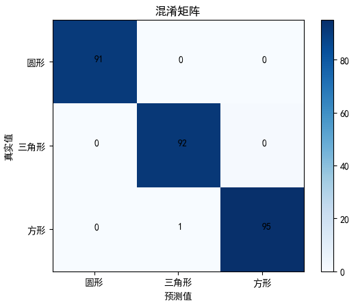
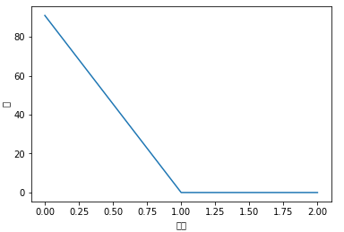
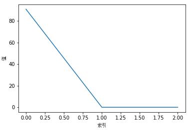

1. 在计算出混淆矩阵之后，想自己绘制图形（并且在图形上显示汉字），可用
#coding=utf-8
import matplotlib.pyplot as plt
import numpy as np
confusion = np.array(([91,0,0],[0,92,1],[0,0,95]))
# 热度图，后面是指定的颜色块，可设置其他的不同颜色
plt.imshow(confusion, cmap=plt.cm.Blues)
# ticks 坐标轴的坐标点
# label 坐标轴标签说明
indices = range(len(confusion))
# 第一个是迭代对象，表示坐标的显示顺序，第二个参数是坐标轴显示列表
#plt.xticks(indices, [0, 1, 2])
#plt.yticks(indices, [0, 1, 2])
plt.xticks(indices, ['圆形', '三角形', '方形'])
plt.yticks(indices, ['圆形', '三角形', '方形'])
plt.colorbar()
plt.xlabel('预测值')
plt.ylabel('真实值')
plt.title('混淆矩阵')
# plt.rcParams两行是用于解决标签不能显示汉字的问题
plt.rcParams['font.sans-serif']=['SimHei']
plt.rcParams['axes.unicode_minus'] = False
# 显示数据
for first_index in range(len(confusion)): #第几行
for second_index in range(len(confusion[first_index])): #第几列
plt.text(first_index, second_index, confusion[first_index][second_index])
# 在matlab里面可以对矩阵直接imagesc(confusion)
# 显示
plt.show()
2. 除了设置plt.rcParams的特征之外，显示汉字的第二个方式 —— 设置fm.FontProperties属性
import matplotlib.font_manager as fm
import matplotlib.pyplot as plt
import numpy as np
myfont = fm.FontProperties(fname='C:/Windows/Fonts/simsun.ttc')
confusion = np.array(([91,0,0],[0,92,1],[0,0,95]))
plt.plot(confusion[0])
plt.xlabel(u'索引',fontproperties=myfont)
plt.ylabel(u'值',fontproperties=myfont)
plt.show()设置前：

设置后：
